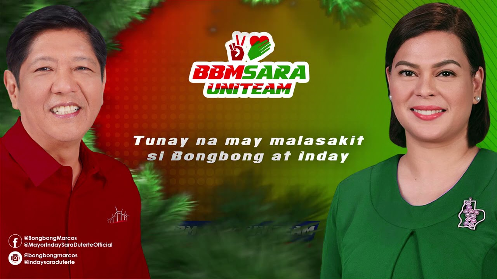

UNITEAM MARCOS X DUTERTE
- 
--JUST SCROLL TO GET SOME INFORMATION ABOUT UNITEAM AND ITS CANDIDATE --
What is Uniteam ?
The UniTeam Alliance is an electoral alliance formed for the 2022 Philippine general election. Formed on November 29, 2021, the alliance is composed of supporters of the candidacies of Bongbong Marcos and Sara Duterte in the 2022 presidential and vice presidential elections..... click here
CANDIDATES OF UNITEAM :
PRESIDENTIAL CANDIDATE :
07 . MARCOS, FERDINAND JR
VICE PRESIDENTIAL :
04 . Duterte-Carpio, SARA
SENATORIAL CANDIDATES :
08 . BAUTISTA, HERBERT ( BISTEK )
27 . EJERCITO, JOSE Jr.
29 . GADON, LARRY
30 . GATCHALIAN, SHERWIN
33 . HONASAN, GREGORIO ( GRINGO )
40 . LEGARDA, LOREN
43 . MARCOLETA, RODANTE
49 . PADILLA, ROBINHOOD FERDINAND ( ROBIN )
54 . ROQUE, HERMINIO ( HARRY ) Jr.
57 . TEODORO, GILBERT ( GIBO )
62 . VILLAR, MARK
64 . ZUBIRI, JUAN MIGUEL ( MIGZ )